<< Home
| < Back
| > Next
SPAM - WWW Interface
Overview
WWW interface to SPAM allows for convenient access to information
collected and managed by SPAM. It also alows performing certain
administrative tasks such as updating database of switch-to-outlet or
outlet-to-server connections. Some parts of the WWW interface make use of
JavaScript, so JavaScript needs to be enabled for full functionality.
Main Page and Switch List
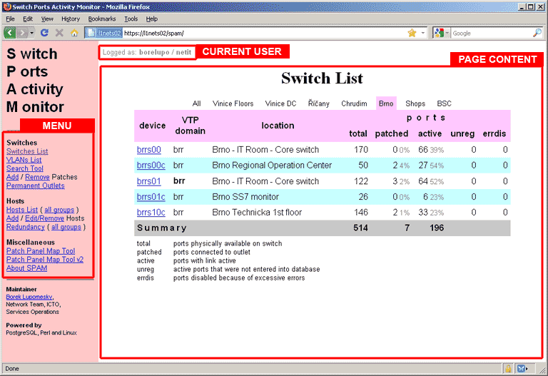
Above screenshot shows the SPAM's main page and also a general layout of
any SPAM page. Initially, SPAM page display list of switches. Above the
table with switch list, there are categories of switches. User can choose to
display either [All] switches or one category based (mostly) on sites by
simply click on category name. This user choice is preserved between views
of the page (ie. the next time user comes to this page, the same category
will be automatically shown). This "switch categories" functionality uses
JavaScript; when JS is disabled, list of all switches is displayed.
Explanation of fields
Device
This is the hostname of the switch. The actual hostname in the list is a
link that will display list of all ports on given switch ("Port List").
VTP domain
VTP domain the switch is in. VTP domain name in bold means the switch is
running in VTP master mode.
Location
This is taken from SNMP location configured on given switch.
Total ports
Total number of ports on a switch.
Patched ports
Number of patched ports on a switch, ie. ports that have associated
consolidation point.
Active ports
Number of active ports on a switch, ie. ports that have operational status
"up". This usually means that the port is receiving link from connected
device.
Unregistered ports
Number of ports that are active (operationally up), but there's no
associated consolidation point while at the same time given switch is
defined in "knownports" configuration statement in spam.cfg. Usually, this
means administrator's failure to enter newly patched connections into
database with the "Add Patches Tool".
Errdis ports
Number of error-disabled ports, ie. ports that were automatically shut-down by
the switch after exceeding preset error limits.
Search Tool
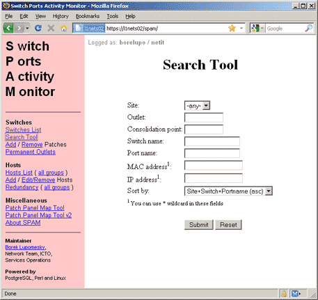
Search Tool is used to find information about outlets, consolidation
points and switch ports. Number of criteria can be used for the search:
Site
Either selects particular site or searches all sites.
Outlet
Search for particular outlet on sites, where outlets are used (that is
mostly at Vinice). The given entry must be exact match, though case needs not
to match and missing or extra spaces are allowd (ie. search for "3036d" is
taken as search for outlet named "3036 D").
Consolidation point
Search for particular consolidation point. The match must be exact. Note,
that in most sites outlets are actually consolidation points from SPAM's
point of view.
Switch name
Constrain search to particular switch. The match must be exact.
Port Name
Search for particular switch port. Exact match is required; "1/1" is not
equal to "Gi1/1".
MAC Address
Search for switch port where given MAC address was seen. MAC address is
entered in one of the following forms: HHHH.HHHH.HHHH,
HH:HH:HH:HH:HH:HH or HH-HH-HH-HH-HH-HH. Wildcard '*' can
also be used with usual semantics. Note, that this field is only available
with extra permission, so not all users will see it in the Search Tool.
Note, that short lived MAC addresses are unlikely to be found here.
IP address
Search for switch port where given IP address was seen. Wildcard '*' can be
used here. Note, that short lived IP addresses are unlikely to be found
here.
Sort by
This option selects sorting by "site, switch and portname", "hostname" and
"chg_when" fields.
Note, that "Site" and "Sort by" fields choice is preserved between views
of the Search Tool page.
Add Patches Tool
The "Add Patches" form is used to conveniently enter new patches into
the database by staff that does connecting new outlets to switch. This
form has few non-apparent features, that are documented here.

Form in unfilled state
Above picture shows the form in its pristine state. Meaning of individual
fields should be self-evident except for "Add rows" field. This one allows
adding more fill-in rows into form and allow entering more than one entry in
one turn for efficiency. When new empty fill-in rows, the content of last
"host" column is copied to the new rows -- see example below. The entire
batch needs to only work with one site, however. Rows are added after user
presess "Submit" or "Check" buttons -- in such case the content of form is
not submitted!
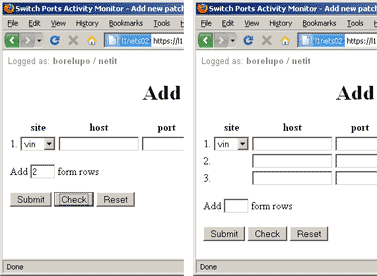
You can add more than one entries per batch
Autocompletion
When you're entering new data, you need not to fill all the fields. The
form will try to fill-in as much data as possible. This mainly works between
consolidation point ("cp") and "outlet": usually only one needs to be entered (depends
on content of OUT2CP table). Also "host" host is in some cases filled-in
automatically (depends on CPRANGES table). In many cases you only need to
fill-in outlet name and switch port, rest of the info will be filled-in
from database. Note, that this automatic completion happens only after you
press "Submit" or "Check" button.
This switchport can be entered (and this is the recommended way) without
its two-letter type designation, ie. instead of "Gi1/20" or "Fa0/1" one needs
only to enter "1/20" or "0/1". The type is filled-in automatically.
Checking and submitting form
When you have entered necessary data, you can have the form check content
for validity/integrity -- you do this by pressing "Check" button. The result
is either some error message(s) in "condition" field or no message. The form
remains filled-in. If you left some fields out, they will be autocompleted
if possible.
Submitting works exactly same as checking, except when validity check
passes OK, the data are sent to backend database. It is possible, that data
that checked OK with "Check" will be rejected by database due to
constraint violation. Such errors are reported in "condition" field.
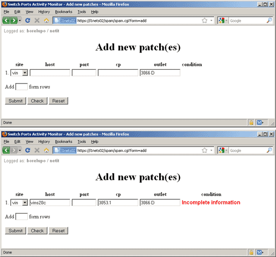
You can entry only outlet to find consolidation point name and switch.
The "Incomplete information" is normal at this point.
Recommended workflow
The "Add patches" form is designed to be the single source of information
for a user who needs to activate (patch) bunch of outlets. First
you add more empty rows to cover number of new patches; second you
fill-in only outlet names and press "Check"; third, you print the
form with consolidation point numbers and go to the wiring room to actually
patch it and while doing so, you write actual port numbers to the paper;
last, when you return you just type in port numbers, press "Submit"
and you're done.
Remove Patch Tool
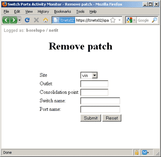
Initial Remove Patch form
Remove Patch removes entries from database. Only one entry can be
removed at once. The form works in two-pass mode: first you enter
which entry is to be deleted. It is not necessary to enter all
data, but the information must not be ambiguous. After this info
is submitted, not-filled information appears in form for review; after
second pressing of "Submit" button, the entry is deleted.
Permanent Outlets Tool
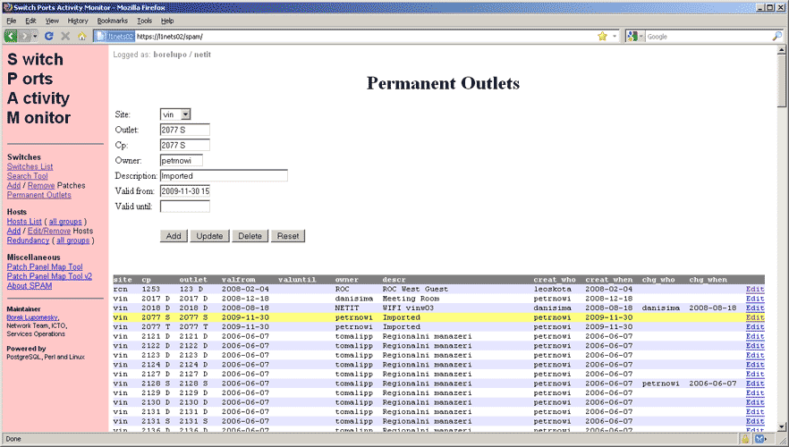
Permanent Outlet form; here one of the entries is being edited
Permanent Outlets tool allows adding, editing and removing of the so-called
permanenout outles -- that is outlets, that are not to be disconnected after
extended period of inactivity (which is normal for other outlets).
Host List
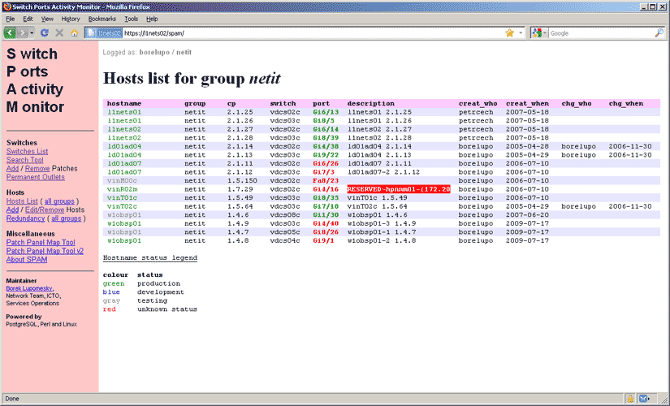
Host List shows contents of hosts table. It can either show entries
for logged-in user's group or entries for all groups.
Hosts table links outlets (consolidation points in fact) to actual
devices (usually datacentre servers). The table host following fields:
hostname, owner group, consolidation point, production status. This table is
maintained by servers' owners and is meant to allow NMC to find out servers
affected by switch or port malfunction and to contact their owners.
Normally, the form will add entry with owner group that of logged-in
user. However, user can be given special authorization, that will enable him
to freely set owner group. This is meant to be used by development, which
provisions servers for an operations team.
Host Add

This form allows adding hosts to hosts table. The usage is very similar to
that of Add Patch.
Host Edit/Remove
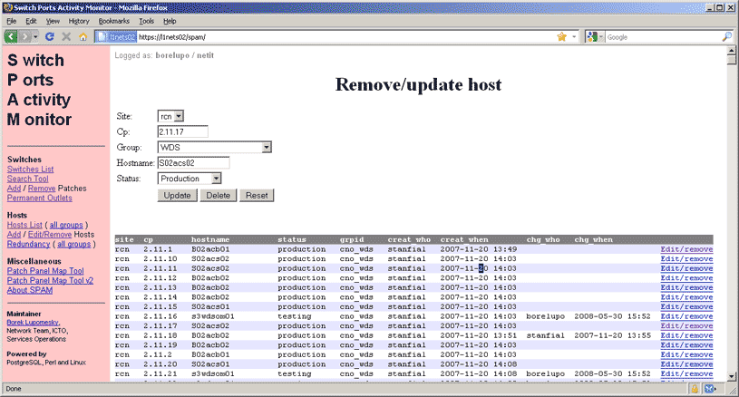
Here user can edit or delete entries from hosts database. User can only
edit or delete entries with his owner group.
Host Redundancy Check
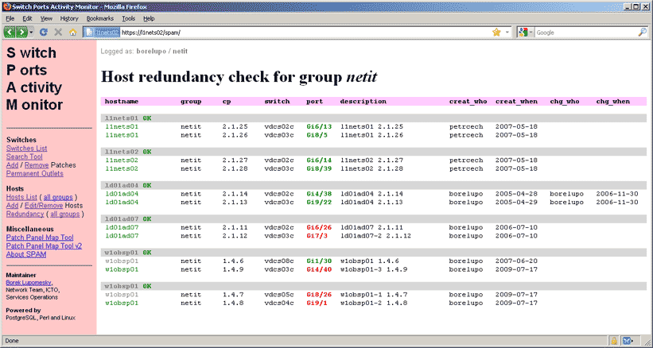
This report shows redundancy status for user's group or for all groups.
Redundancy check is ok when server has more than one connection where
each one goes to different switch; check status fail means that
server either has only one connection, or has more than one, but they all
lead to one switch; status unknown means that some of the entries
have unassociated consolidation points and therefore check cannot be
performed.
Patch Panel Map Tool
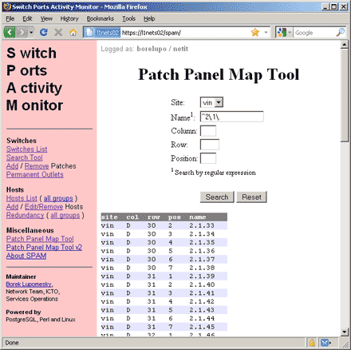
This tool helps user to find position of given connector on large VisiPatch
arrays in datecentres. The arrays are organized in columns (named by capital
letters), rows and positions (numbered starting from one). So in this form
user enters name of the connector (the string is actually a reg-exp) and
list of all matching connectors with their coordinates is reported back.
Patch Panel Map Tool v2
This is more sophisticated version of Patch Panel Map
Tool. It uses HTML 5 Canvas to draw graphical map of VisiPatch
array. For this reason Canvas-enabled browser is required (most new browsers
support Canvas with the exception of MS Internet Explorer).
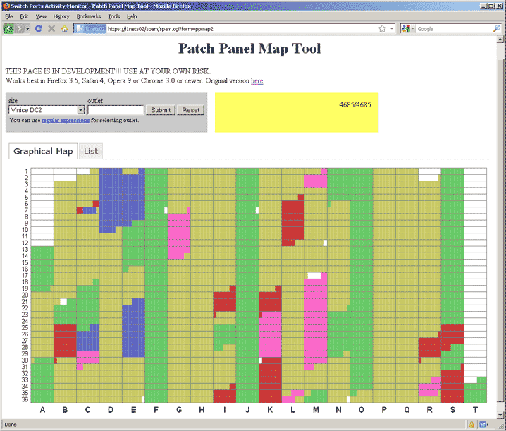
In the grey field user selects datacentre and can (but needs not) to
enter reg-exp filter. After the map is displayed, moving mouse pointer over
the map will show connector name and coordinates in the yellow field (upper
right). The various types of outlets are colour coded as follows:
terminal servers
end-user outlets
servers
interconnects
switch ports
other active devices
consolidation points
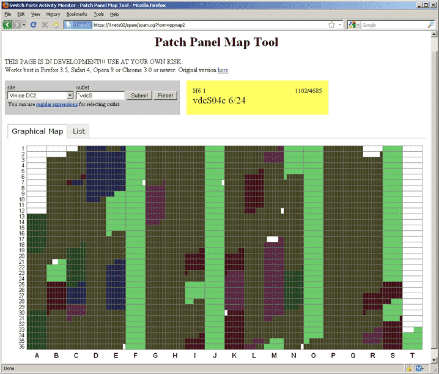
Example: In above picture the graphical map displays only connectors with
names matching reg-exp "^vdcS". Other connectors are darkened in the
map. Note, that in the upper right corner of the yellow information field
there is figure in form X/Y, where X is number of filtered connectors and Y
is total number of connectors.